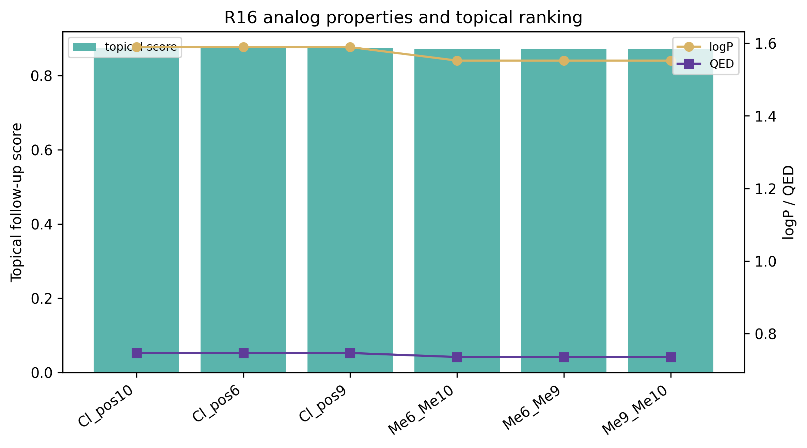
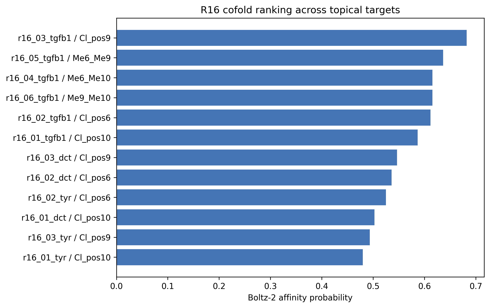
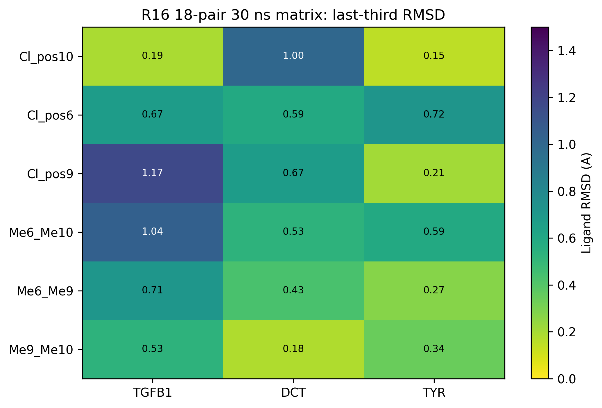
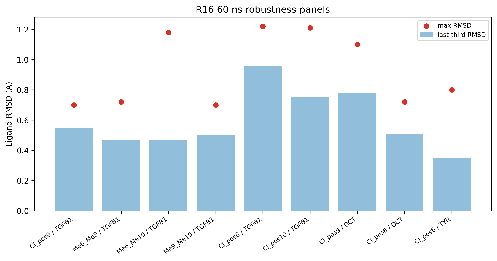
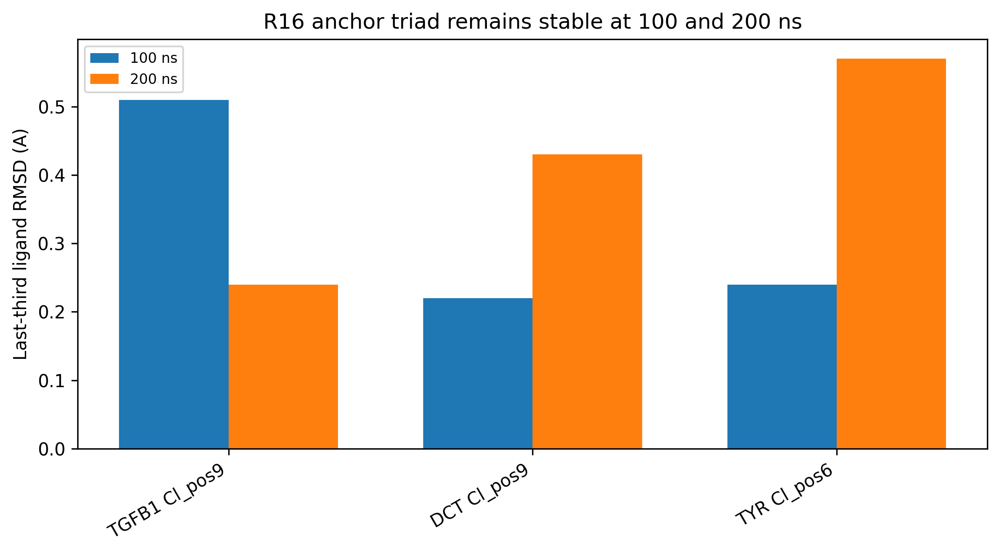

R16 optimized the R15 chromanol fragment toward a topical lead
hypothesis by increasing skin-window compatibility while preserving a
compact chromanol core. We evaluated six chloro/dimethyl analogs across
TGFB1, DCT, and TYR using Boltz-2 cofolding, an 18-pair 30 ns OpenMM
stability matrix, two 60 ns robustness panels, and 100 ns plus 200 ns
anchor-triad follow-up. The top cofold row was r16_03_tgfb1
(R15_chromanol_Cl_pos9,
OCC1COc2cc(O)c(Cl)cc2C1) with affinity probability
0.682. All 18 30 ns matrix entries were stable, the TGFB1
top-six 60 ns panel completed 6/6 stable, and the DCT/TYR representative
60 ns panel completed 3/3 stable. The 200 ns long-horizon anchor triad
also completed 3/3 stable: TGFB1 R15_chromanol_Cl_pos9 max
RMSD 0.71 A, DCT R15_chromanol_Cl_pos9 max RMSD 1.05 A, and
TYR R15_chromanol_Cl_pos6 max RMSD 0.80 A. These data
support an in-silico topical optimization hypothesis, not clinical
efficacy, confirmed binding, composition novelty, or freedom to
operate.
Keywords: chromanol, topical drug discovery, TGFB1, DCT, TYR, Boltz-2, OpenMM, in silico, prior-art gate
This manuscript separates the topical R16 analog path from the R15 safety-first parent path. The question is whether R16 chloro/dimethyl chromanol analogs can be prioritized as topical in-silico candidates after target cofolding, raw-pose sanity checks, 30-60 ns robustness panels, and complete 200 ns long-horizon anchor follow-up.
| file | role |
|---|---|
pilot/cpu_meaningful/r16_chromanol_topical_manifest.csv |
six R16 topical chromanol analog definitions and topical scores |
pilot/cpu_meaningful/r16_chromanol_topical_cofold.csv |
18 Boltz-2 cofold rows across TGFB1, DCT, and TYR |
pilot/cpu_meaningful/r16_topical_chromanol_30ns_matrix_summary.csv |
18-pair 30 ns MD matrix |
pilot/md_r16_chromanol_topical_tgfb1_top6_60ns/summary.json |
TGFB1 top-six 60 ns robustness panel |
pilot/md_r16_chromanol_topical_pigment_representative_60ns/summary.json |
DCT/TYR representative 60 ns panel |
pilot/md_r16_chromanol_anchor_triad_100ns/summary.json |
TGFB1/DCT/TYR 100 ns anchor triad |
pilot/md_r16_chromanol_anchor_triad_200ns/summary.json |
complete 200 ns long-horizon anchor triad |
pilot/cpu_meaningful/precompute_prior_art_gate.csv |
technical prior-art pre-gate, not legal FTO opinion |

| rank | job_id | target | analog | affinity probability | logP | QED |
|---|---|---|---|---|---|---|
| 1 | r16_03_tgfb1 | TGFB1 | R15_chromanol_Cl_pos9 | 0.682 | 1.59 | 0.747 |
| 2 | r16_05_tgfb1 | TGFB1 | R15_chromanol_Me6_Me9 | 0.636 | 1.55 | 0.736 |
| 3 | r16_04_tgfb1 | TGFB1 | R15_chromanol_Me6_Me10 | 0.616 | 1.55 | 0.736 |
| 4 | r16_06_tgfb1 | TGFB1 | R15_chromanol_Me9_Me10 | 0.615 | 1.55 | 0.736 |
| 5 | r16_02_tgfb1 | TGFB1 | R15_chromanol_Cl_pos6 | 0.612 | 1.59 | 0.747 |
| 6 | r16_01_tgfb1 | TGFB1 | R15_chromanol_Cl_pos10 | 0.587 | 1.59 | 0.747 |
| 7 | r16_03_dct | DCT | R15_chromanol_Cl_pos9 | 0.546 | 1.59 | 0.747 |
| 8 | r16_02_dct | DCT | R15_chromanol_Cl_pos6 | 0.536 | 1.59 | 0.747 |
| 9 | r16_02_tyr | TYR | R15_chromanol_Cl_pos6 | 0.525 | 1.59 | 0.747 |
| 10 | r16_01_dct | DCT | R15_chromanol_Cl_pos10 | 0.502 | 1.59 | 0.747 |

All 18 R16 chromanol topical target pairs completed 30 ns MD with
stable_30ns=True. Across the matrix, the maximum RMSD was
1.38 A and the maximum last-third RMSD was
1.17 A.
| job_id | target | analog | affinity probability | mean RMSD A | last-third RMSD A | max RMSD A |
|---|---|---|---|---|---|---|
| r16_06_dct | DCT | R15_chromanol_Me9_Me10 | 0.420 | 0.22 | 0.18 | 0.68 |
| r16_05_dct | DCT | R15_chromanol_Me6_Me9 | 0.421 | 0.45 | 0.43 | 0.81 |
| r16_04_dct | DCT | R15_chromanol_Me6_Me10 | 0.329 | 0.51 | 0.53 | 0.68 |
| r16_02_dct | DCT | R15_chromanol_Cl_pos6 | 0.536 | 0.56 | 0.59 | 0.81 |
| r16_03_dct | DCT | R15_chromanol_Cl_pos9 | 0.546 | 0.38 | 0.67 | 1.00 |
| r16_01_dct | DCT | R15_chromanol_Cl_pos10 | 0.502 | 0.74 | 1.00 | 1.25 |
| r16_01_tgfb1 | TGFB1 | R15_chromanol_Cl_pos10 | 0.587 | 0.21 | 0.19 | 0.66 |
| r16_06_tgfb1 | TGFB1 | R15_chromanol_Me9_Me10 | 0.615 | 0.54 | 0.53 | 0.81 |
| r16_02_tgfb1 | TGFB1 | R15_chromanol_Cl_pos6 | 0.612 | 0.55 | 0.67 | 0.87 |
| r16_05_tgfb1 | TGFB1 | R15_chromanol_Me6_Me9 | 0.636 | 0.68 | 0.71 | 0.89 |
| r16_04_tgfb1 | TGFB1 | R15_chromanol_Me6_Me10 | 0.616 | 0.99 | 1.04 | 1.24 |
| r16_03_tgfb1 | TGFB1 | R15_chromanol_Cl_pos9 | 0.682 | 0.81 | 1.17 | 1.38 |
| r16_01_tyr | TYR | R15_chromanol_Cl_pos10 | 0.480 | 0.28 | 0.15 | 0.68 |
| r16_03_tyr | TYR | R15_chromanol_Cl_pos9 | 0.493 | 0.24 | 0.21 | 0.67 |
| r16_05_tyr | TYR | R15_chromanol_Me6_Me9 | 0.422 | 0.46 | 0.27 | 0.93 |
| r16_06_tyr | TYR | R15_chromanol_Me9_Me10 | 0.430 | 0.46 | 0.34 | 0.71 |
| r16_04_tyr | TYR | R15_chromanol_Me6_Me10 | 0.351 | 0.36 | 0.59 | 0.74 |
| r16_02_tyr | TYR | R15_chromanol_Cl_pos6 | 0.525 | 0.69 | 0.72 | 0.91 |

The TGFB1 top-six 60 ns panel completed 6/6 stable
entries, and the representative DCT/TYR pigmentation panel completed
3/3 stable entries. The strongest single analog across both
target families is R15_chromanol_Cl_pos9, which carries
TGFB1 and DCT support. R15_chromanol_Cl_pos6 is the
strongest TYR-focused follow-up.

| name | target | analog | affinity probability | mean RMSD A | last-third RMSD A | max RMSD A |
|---|---|---|---|---|---|---|
| r16_03_tgfb1__R15_chromanol_Cl_pos9__200ns | TGFB1 | R15_chromanol_Cl_pos9 | 0.682 | 0.27 | 0.24 | 0.71 |
| r16_03_dct__R15_chromanol_Cl_pos9__200ns | DCT | R15_chromanol_Cl_pos9 | 0.546 | 0.34 | 0.43 | 1.05 |
| r16_02_tyr__R15_chromanol_Cl_pos6__200ns | TYR | R15_chromanol_Cl_pos6 | 0.525 | 0.49 | 0.57 | 0.80 |

The R16 raw-pose sanity split is 11 pass, 7
review, and 0 fail rows. Review-level rows are disclosed as
raw Boltz-pose caveats and interpreted with minimized/MD stability.
The precompute prior-art gate classifies the R16 chromanol analog
rows as
{'hold_expensive_compute_until_markush_review': 9, 'cheap_compute_allowed_prior_art_pending': 9}.
The practical implication is strict: existing R16 data can be written as
in-silico prioritization, but new 100-200 ns expansion, RBFE/ABFE,
synthesis/purchase, commercial novelty, and FTO claims should wait for
PubChem/SureChEMBL/PATENTSCOPE/Lens/EPO OPS plus professional Markush
and attorney claim-chart review.
R15_chromanol_Cl_pos9 is the strongest TGFB1-first
topical hypothesis because it combines the highest cofold probability,
stable 30 ns target-diverse MD, stable TGFB1 60 ns MD, representative
DCT 60 ns support, and stable TGFB1/DCT 200 ns long-horizon anchors.
R15_chromanol_Cl_pos6 is the strongest TYR-focused
pigmentation follow-up because it carries DCT/TYR 60 ns support and
stable TYR 200 ns anchoring. This is a prioritization statement
only.
All findings are in silico only. Boltz-2 cofolding is not a
biochemical assay. MD pose stability is not potency, target engagement,
residence time, or skin exposure. Photosafety, sensitization, hERG,
AMES, DILI, irritation, IVRT/IVPT, PBPK, formulation compatibility, and
target-engagement assays remain required. A PubChem no_hit
or local distinctness result is not a freedom-to-operate opinion because
Markush and use claims can still cover unmade or unlisted analogs.
R16 is the strongest current topical chromanol in-silico lead family in Genesis_Medicine. The completed 30 ns, 60 ns, 100 ns, and 200 ns panels justify manuscript completion and CRO hypothesis packaging, while the prior-art gate blocks stronger commercial and follow-on expensive-compute claims until Markush/FTO review is complete.